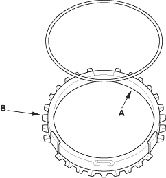
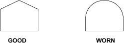
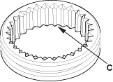
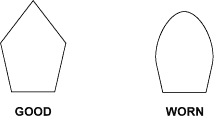
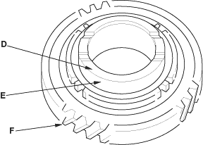

- Inspect the inside of each synchro ring (A) for wear.
Inspect the teeth (B) on each synchro ring for wear (rounded off).

Example of synchro ring teeth

- Inspect the teeth (C) on each synchro sleeve and matching teeth on each gear for wear (rounded off).

Example of synchro sleeve teeth and gear teeth


- Inspect the thrust surface (D) on each gear hub for wear.

- Inspect the cone surface (E) on each gear hub for wear and roughness.
- Inspect the teeth on all gears (F) for uneven wear, scoring, galling, and cracks.
- Coat the cone surface of each gear (E) with oil and place its synchro ring on it. Rotate the synchro ring, making sure that it does not slip.